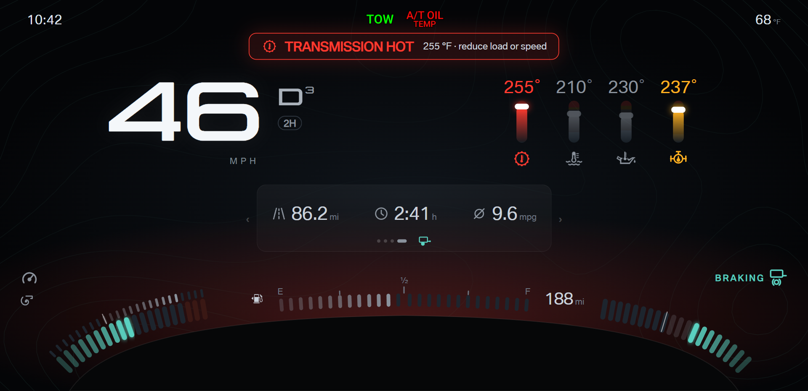
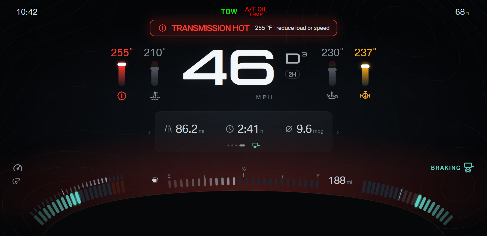

F150 cluster · Design round 18 · Towing A with visual balance
Towing A from round 10 is locked. Round 18 keeps the round 17 tiers and balances the screen. Pick A or B.
- Both: one row system. Hero row (speed, gear, temperatures) from y 186 to 396; the paged panel on the center line under the hero row (x 610 to 1310); the corners and the fuel line below.
- Both: heavier temperature bars (26 px wide), so the temperature group carries weight against the speed.
- Primary, always on screen: speed, gear, temperatures, both corner bands, and the fuel line. Secondary pages: trailer, tires, engine, trip.
- A · Mirrored halves: the speed group on the left and the four temperature bars on the right, mirrored across the center.
- B · Center axis: the speed group on the center line, with two temperature bars on each side (transmission and coolant left, oil and differential right).
A · Mirrored halves
braking and transmission hot, driver on the trip page

B · Center axis
braking and transmission hot, driver on the trip page
